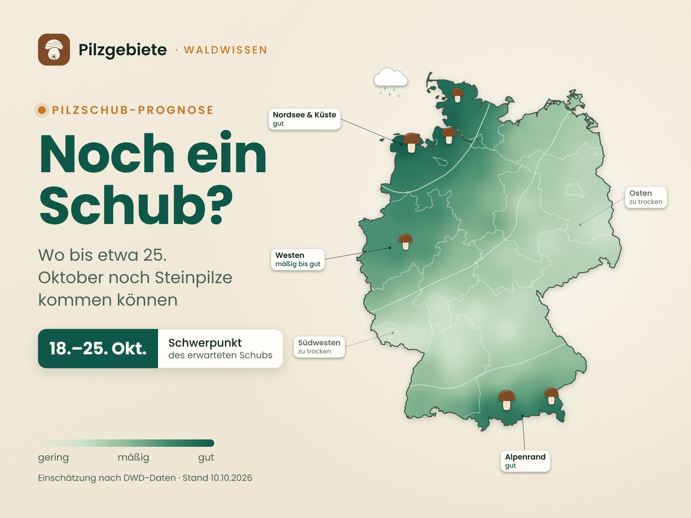

Noch ein Schub? Wann die Pilzsaison wirklich endet.
Die Pilzsaison hat kein Datum. Sie hat ein Temperaturfenster — und das schließt sich nicht überall am selben Tag. Was die Forschung über Wellen und Saisonende weiß, und was das für die nächsten zwei Wochen heißt.
Stand 10. Oktober 2026 · Grundlage sind eine zehnjährige Zählung bei Bielefeld, Langzeitreihen aus der Schweiz, Norwegen und England, Fundmeldungen aus Deutschland und die Vorhersagen des Deutschen Wetterdienstes. Der Wetterausblick gilt bis 24. Oktober 2026. Alle Quellen am Ende der Seite.

Die Schub-Prognose auf einen Blick: Je dunkler das Grün, desto besser die Chancen auf einen Schub bis etwa 25. Oktober. Das ist eine Einschätzung, keine Messung. Wie sie zustande kommt, steht weiter unten bei der interaktiven Karte.
Die kurze Antwort, falls du es eilig hast
Die Saison ist ein Fenster, kein Termin. Bei Bielefeld lagen die Steinpilzfunde in zehn Jahren zwischen dem 5. August, kurz nach Beginn der Suche, und dem 21. November. Die meisten erschienen, wenn das Temperaturmittel der vorangegangenen 20 Tage zwischen 10 und 15 °C lag.
Wellen zählt niemand. Das Wetter macht sie. Keine Studie nennt eine feste Zahl an Steinpilzwellen pro Jahr. Jeder ergiebige Regen, der in das offene Temperaturfenster fällt, kann rund zehn bis zwölf Tage später einen eigenen Schub auslösen.
2026 ist noch ein Schub drin, aber nicht überall. Der Regen ab dem 7. Oktober traf vor allem die Nordsee, den Westen und den Alpenrand. Dort spricht viel für einen Schub um den 20. bis 25. Oktober. Im ausgetrockneten Südwesten und im Osten eher nicht.
Der Kalender
Die Saison hat kein Datum. Sie hat eine Verteilung.
Frag zehn Sammler, wann Steinpilzzeit ist, und du bekommst zehn Antworten. Die Fundmeldungen aus Deutschland geben eine nüchternere. In der weltweiten Biodiversitätsdatenbank GBIF sind für die Jahre 2015 bis 2025 knapp 4.000 Steinpilzfunde aus Deutschland mit Monatsangabe eingetragen. 42 Prozent stammen aus dem Oktober, 32 Prozent aus dem September, 14 aus dem August. Im November sind es noch 8 Prozent. Danach ist praktisch Schluss.
Spannend wird es, wenn man die Verwandtschaft danebenlegt. Der Sommersteinpilz hat seinen Gipfel im August und taucht in den Meldungen für Juni und Juli mehr als dreimal so oft auf wie der Gemeine Steinpilz. Wer im Juli von der „ersten Steinpilzwelle“ spricht, meint also oft eine andere Art. Der Pfifferling wiederum verteilt sich breit über fünf Monate, von Juni bis Oktober.
Wann in Deutschland welche Art gemeldet wird
Anteil der Fundmeldungen je Monat, 2015 bis 2025. Der hervorgehobene Balken ist jeweils der stärkste Monat.
Sommersteinpilz
Boletus reticulatus · 938 Meldungen
Steinpilz
Boletus edulis · 3.972 Meldungen
Pfifferling
Cantharellus cibarius · 1.699 Meldungen
Werte als Tabelle
Art
Mai
Jun
Jul
Aug
Sep
Okt
Nov
Dez
Sommersteinpilz
4,6 %
23,6 %
23,1 %
34,5 %
7,0 %
5,3 %
1,5 %
0,0 %
Steinpilz
0,0 %
0,8 %
2,4 %
13,8 %
32,3 %
41,7 %
8,3 %
0,4 %
Pfifferling
1,5 %
10,5 %
16,4 %
22,5 %
23,4 %
16,9 %
5,6 %
2,2 %
GBIF.org, Occurrence Search, Land Deutschland, Jahre 2015–2025, abgerufen am 10.10.2026. Meldungen mit Monatsangabe: Steinpilz (Boletus edulis) 3.972, Sommersteinpilz (B. reticulatus) 938, Pfifferling (Cantharellus cibarius) 1.699. Monate von Januar bis April sind nicht dargestellt (zusammen unter 2 Prozent) · Darstellung: Pilzgebiete
Einordnung, damit die Kurve nicht mehr sagt, als sie kann: Das sind Meldungen von Menschen, überwiegend über Apps wie iNaturalist und NABU-naturgucker. Sie zeigen, wann Leute im Wald sind und etwas eintragen, nicht wie viele Pilze wirklich stehen. Verwechslungen kommen vor. Für die Frage, in welchem Monat eine Art ihren Schwerpunkt hat, taugen sie trotzdem — und sie passen zur systematischen Zählung bei Bielefeld, um die es gleich geht.
Regional verschiebt sich das Bild. Nimmt man nur die Steinpilz-Meldungen aus Bayern (alle Jahre, 554 mit Monatsangabe), liegt der Gipfel schon im September mit 40 Prozent, der Oktober folgt mit 26 Prozent. Warum, lässt sich aus Meldedaten allein nicht ablesen.
Der wichtigste Wert
10 bis 15 °C
So warm war es im Mittel der 20 Tage vor den meisten Steinpilzfunden
Zehn Jahre, 15 bis 29 Fundstellen, zwei- bis viermal pro Woche abgegangen: Aus der Zählung in einem Buchenwald bei Bielefeld haben die Forscher die Fruchtkörperbildung nach eigenen Angaben erstmals tagesgenau mit dem Wetter verknüpft. Die überarbeitete Fassung legt das Optimum bei etwa 13 °C, gemittelt über die 20 Tage vor dem Fund.
Die Arbeit ist als Preprint veröffentlicht und noch nicht abschließend begutachtet. Unser Beitrag „Wie Steinpilze wachsen“ stützt sich auf die erste Fassung, die mit Fünf-Tage-Mitteln gerechnet hat. Die Zahlen auf dieser Seite stammen aus der aktuellen Fassung.
Was die Saison öffnet
Zwei Regler: drei Wochen Temperatur, vier Wochen Regen
Die Bielefelder Daten zeigen zwei Stellschrauben, und beide haben ein langes Gedächtnis.
Die Temperatur wirkt wie ein Fenster. Die meisten Fruchtkörper erschienen, wenn das Mittel der letzten 20 Tage zwischen 10 und 15 °C lag. Darüber wurden es weniger, darunter auch: Bei 5 bis 10 °C, also bei den Temperaturen, die im Untersuchungszeitraum am häufigsten vorkamen, blieben Steinpilze weitgehend aus.
Der Regen wirkt wie ein Konto. Am besten passte der Niederschlag der letzten 26 Tage. Je mehr, desto mehr Pilze, eine Obergrenze fanden die Forscher nicht. Die meisten Funde fielen in Phasen mit 2 bis 4 mm Regen pro Tag im Schnitt. Umgerechnet sind das gut 50 bis 100 Liter pro Quadratmeter in knapp vier Wochen.
Warum so lange Zeiträume? Weil zwischen Regen und Pilz der Boden steht. Das Geflecht sitzt in Streu und Oberboden und braucht Wasser, das bleibt. Nach langer Trockenheit nimmt der Boden zudem schlecht auf: Starkregen fließt zum großen Teil oberirdisch ab, erst länger anhaltender Landregen befeuchtet ihn Schritt für Schritt.
Was der September 2026 aufs Regenkonto brachte
Monatssumme des Niederschlags, umgerechnet auf Liter pro Quadratmeter und Tag. Die Fläche dahinter zeigt den Bereich, in dem bei Bielefeld die meisten Steinpilze gefunden wurden.
Cadenberge (Niedersachsen)nasseste Station · 142,2 l/m²
4,7
Joldelund (Schleswig-Holstein)zweitnasseste Station · 138,9 l/m²
4,6
DeutschlandMittel aller Stationen · knapp 40 l/m²
≈ 1,3
Henschtal (Rheinland-Pfalz)trockenste Station · 0,8 l/m²
0,03
0123456Liter pro m² und Tag
2 bis 4 mm pro Tag: Bereich der meisten Funde bei Bielefeld (Mittel über 26 Tage)
Niederschlag: Deutscher Wetterdienst, vorläufige Monatsbilanz „Deutschlandwetter im September 2026“ vom 02.10.2026; Monatssumme geteilt durch 30 Tage. Bereich: Brejon Lamartiniere & Hoffman, bioRxiv-Preprint, aktuelle Fassung · Darstellung: Pilzgebiete
Das erklärt den Sommer und Frühherbst 2026 recht gut. Im Bundesmittel kam der September auf knapp 40 Liter, rund 1,3 pro Tag. Das liegt unter dem Bereich, in dem die Bielefelder Steinpilze kamen. Die Ausnahme war der Norden: An einzelnen Stationen in Niedersachsen und Schleswig-Holstein fiel mehr als dreimal so viel.
Die Wellen
Wie viele Steinpilzwellen gibt es? So viele, wie das Wetter Fenster aufmacht.
Die ehrliche Antwort zuerst: Eine feste Zahl gibt es nicht. Wir haben keine Studie gefunden, die für Steinpilz oder Pfifferling Wellen pro Jahr zählt. Was es gibt, sind Beobachtungen und ein plausibler Mechanismus.
Die Beobachtung: Bei Bielefeld kamen die Steinpilze in mehreren Jahren nicht gleichmäßig, sondern in klar getrennten Schüben, 2020 zum Beispiel.
Der Mechanismus: Regen wirkt mit Verzögerung. In einem italienischen Tannenwald am Monte Amiata stieg die Steinpilz-Ausbeute nach Tagen mit mindestens 20 mm Regen vor allem um den zehnten bis zwölften Tag danach. Plötzliche Hitzespitzen von etwa 8 °C über dem Mittel bremsten dagegen.
Zusammen ergibt das eine einfache Regel: Jeder ergiebige Regen, der in das offene Temperaturfenster fällt, kann seinen eigenen Schub auslösen. Ein Regen im heißen August verpufft eher, einer Ende September trifft die beste Zeit, einer Mitte November kommt zu spät. Probier es aus.
Regen setzen, Schub abwarten
Tippe in die Zeitleiste, um einen ergiebigen Regen zu setzen (bis zu fünf, erneut tippen entfernt ihn). Gut zwölf Tage später zeigt das Modell, wie kräftig der Schub ausfällt. Entscheidend ist, wie nah die Temperatur dann am Optimum liegt.
Zeitraum: 1. August bis 30. November
Temperatur, Mittel über 20 TageFenster 10 bis 15 °CRegenPilzschub
Modell zum Ausprobieren, schematisch und keine Vorhersage. Temperaturverlauf vereinfacht. Annahmen: Optimum etwa 13 °C im 20-Tage-Mittel, kaum Fruchtkörper unter 10 °C (Brejon Lamartiniere & Hoffman, Preprint); Schub rund 12 Tage nach dem Regen (Salerni et al. 2023) · Darstellung: Pilzgebiete
Das Ende
Wann ist Schluss? Wenn es kalt bleibt, nicht wenn es einmal friert.
Bei Bielefeld lag der späteste Steinpilzfund der zehn Jahre am 21. November. Gesucht wurde jeweils ab Anfang August bis zum ersten starken Frost oder bis zwei Wochen nach dem letzten Fund. Das passt zum Temperaturfenster: Fällt das 20-Tage-Mittel unter etwa 10 °C, erscheinen kaum noch Fruchtkörper.
Rechnerisch heißt das auch: Eine einzelne Frostnacht drückt ein Mittel über 20 Tage nur wenig. Eine kalte Phase von zwei, drei Wochen schließt das Fenster. Was Frost mit einem stehenden Fruchtkörper macht, ist für den Steinpilz kaum untersucht. Dazu haben wir keine belastbare Studie gefunden.
Dahinter steckt wieder der Baum. Steinpilz und Pfifferling leben in Partnerschaft mit Bäumen, und solche Mykorrhizapilze haben eine kompaktere Saison als Pilze, die abgestorbenes Pflanzenmaterial zersetzen. Die Autoren einer großen europäischen Auswertung vermuten, dass sie zum Teil auf Signale ihres Wirtsbaums reagieren. Wie eng der Pilz am Zucker des Baums hängt, haben wir im Beitrag „Wie Steinpilze wachsen“ beschrieben. Ob das Nachlassen der Photosynthese im Spätherbst das Saisonende mitbestimmt, ist für den Steinpilz allerdings nicht untersucht.
Und das Fenster wandert. In Südengland hat sich die Herbstsaison der Großpilze zwischen den 1950er- und den 2000er-Jahren mehr als verdoppelt. In der Schweiz fruchteten Pilze nach 1991 im Mittel 12 Tage später als davor, in Norwegen seit 1980 im Mittel knapp 13 Tage später. Für Deutschland gibt es keine eigene Auswertung dieser Art. Die Richtung in den Nachbarländern ist aber eindeutig: später, und in den meisten Auswertungen auch länger.
21. Nov.spätester Steinpilz bei Bielefeld, 2015 bis 2024
33 → 75 TageHerbstsaison der Großpilze in Südengland, 1950er gegenüber 2000er-Jahren
+12 Tagespäter fruchteten Pilze in der Schweiz nach 1991
+12,9 Tagespäter fruchteten Herbstpilze in Norwegen seit 1980
Der Pfifferling
Der Pfifferling tickt anders. Ihn bremst die Hitze früher.
Für den Pfifferling gibt es eine 25-jährige Reihe aus einem Schweizer Wald. Er gehört dort zu den Arten, die schon vor dem Hochsommer erscheinen, während die meisten anderen erst im Spätsommer loslegen. Viel Regen im Juni förderte die Ausbeute. Ein heißer Juli drückte sie und ließ die Pfifferlingssaison früher enden. In Ostfinnland hängen die Marktmengen ebenfalls am Regen im Juni und Juli, beim Steinpilz dagegen am Regen im August.
Dazu kommt sein Tempo. Pfifferlinge wachsen langsam, nur wenige Zentimeter im Monat, und können dafür lange stehen: In nordamerikanischen Untersuchungen hielt ein Fruchtkörper im Mittel 44 Tage, gelegentlich über 90. Für den europäischen Pfifferling fehlen solche Messungen. Was du im Oktober findest, kann also schon eine Weile dort stehen. Mehr dazu im Beitrag „Der Pfifferling hat keine Eile“.
Worauf du beim Wetter achten solltest
Vier Fragen statt „Hat es geregnet?“
Aus den Studien lässt sich eine kleine Checkliste ableiten. Sie ersetzt keinen Blick in den Wald, sortiert aber die Wetterberichte.
Wie viel Regen kam in den letzten vier Wochen?
Nicht der Schauer von gestern zählt, sondern die Summe. Bei Bielefeld fielen die meisten Funde in Phasen mit gut 50 bis 100 Litern in knapp vier Wochen. In der App siehst du für jedes Gebiet den Niederschlag der letzten 30 Tage.
Wie kühl waren die letzten drei Wochen?
Liegt das Tagesmittel über Wochen um 10 bis 15 °C, ist das Fenster offen. Bleibt es dauerhaft darunter, schließt es sich. Ein warmer, trockener September ist kein verspäteter Saisonstart, sondern ein ausgefallener.
Wann kam der letzte ergiebige Regen?
Rund zehn bis zwölf Tage danach lohnt sich der Blick. Früher ist oft zu früh. Und nach einer plötzlichen Hitzespitze kann es länger dauern.
Wie geht es Boden und Gelände?
Nach langer Trockenheit wird nur die oberste Schicht schnell nass. In klaren Nächten fließt kalte Luft von den Hängen ab und sammelt sich in Senken und Tälern. Dort gibt es zuerst Bodenfrost, schon wenige Kilometer weiter kann es Plusgrade haben.
Ausblick 10. bis 24. Oktober 2026
Kommt noch ein Schub? Im Nordwesten und am Alpenrand spricht viel dafür.
Die Ausgangslage war schwierig. Der September war mit 15,9 °C im Bundesmittel 2,1 Grad wärmer als das Mittel 1991 bis 2020 und brachte mit knapp 40 Litern pro Quadratmeter rund 39 Prozent weniger Regen als üblich. Verteilt war das extrem ungleich. An der Nordsee und in Schleswig-Holstein meldeten einzelne Stationen über 130 Liter, im Saarland fielen nicht einmal 5. Anfang Oktober meldete der Wetterdienst teils extremen Trockenstress im Boden für das Saarland, Rheinland-Pfalz, Südhessen, Baden-Württemberg und Bayern. Seit dem Frühjahr fehlen dort gebietsweise 200 bis 500 Liter.
Dann kam der Wetterwechsel. Bis zum 11. Oktober erwartete der Wetterdienst an der Nordsee und am Alpenrand 40 bis 60 Liter, lokal um 80, im Westen 15 bis 40 und im Osten nur 3 bis 20. In der Nacht zum 8. Oktober fielen zwischen Eifel und Teutoburger Wald binnen zwölf Stunden gebietsweise 20 bis 30 Liter, in Essen-Bredeney 40. Für das Nordseeumfeld kündigte der DWD am Samstag noch einmal 30 bis 50 Liter bis Sonntagmittag an. Das Defizit gleicht das bei Weitem nicht aus. Für einen Pilzschub reicht es regional trotzdem.
Wo bis etwa 25. Oktober ein Schub am wahrscheinlichsten ist
Einschätzung aus Regen ab dem 7. Oktober, Vorfeuchte im Boden und Frostgefahr. Tippe auf die Karte für Details.
geringmäßiggut
So ist die Karte gemacht. Für jede Region haben wir drei Dinge zusammengeführt: die Regenmengen, die der Wetterdienst für den 7. bis 12. Oktober erwartet oder gemessen hat, die Vorfeuchte aus dem September und der Bodenfeuchte-Lage Anfang Oktober sowie die Frostgefahr der nächsten Nächte. Zwischen den Regionswerten ist die Fläche geglättet.
Das ist eine Einschätzung, keine Messung und keine Fundgarantie. Ein einzelner Wald kann deutlich besser oder schlechter dastehen als seine Region. Wie es in deinem Gebiet aussieht, zeigt die App mit Niederschlag und Temperatur der letzten 30 Tage und der Vorhersage.
Einschätzung Pilzgebiete, Stand 10.10.2026. Grundlage: Regenmengen nach Deutschem Wetterdienst („Thema des Tages“ vom 06.10. und 08.10.2026, Lagebericht vom 10.10.2026), Bodenfeuchte-Lage vom 04.10.2026, Monatsbilanz September 2026, Frostangaben aus der DWD-Vorhersage vom 09.10.2026. Die Ebene „Regen“ ist eine grobe Fläche aus den genannten Mengenspannen, keine gemessene Niederschlagskarte. Kartengrundlage: Natural Earth · Darstellung: Pilzgebiete
Die Temperatur passt. Der DWD erwartet ab Montag meist ruhiges Herbstwetter mit 14 bis 21 °C am Tag und 2 bis 11 °C in der Nacht. In der Nacht zum Dienstag kann es im Süden und Osten leichten Bodenfrost geben, ab der Nacht zum Donnerstag gebietsweise dichten Nebel. Rechnet man aus den Spannen Tagesmittel, landen sie überwiegend zwischen 8 und 15 °C. Das hält das Fenster offen.
Die nächsten Tage laut Deutschem Wetterdienst
Spannen für Deutschland insgesamt, vom kühlsten bis zum wärmsten Landesteil. Die Fläche dahinter zeigt das Fenster für das 20-Tage-Mittel.
0°5°10°15°20°
✱
20.–24. noch keine DWD-Aussageab 20. offen
So11.
Mo12.
Di13.
Mi14.
Do15.
Fr16.
Sa17.
So18.
Mo19.
Di–Sa20.–24.
Höchstwerte am TagTiefstwerte in der folgenden Nacht✱leichter Bodenfrost möglich, Süden und OstenSa bis Mo: nur Trend, blasser dargestellt
Deutscher Wetterdienst, Wetterbericht vom 10.10.2026, 08:30 UTC (Sonntag) und „Weitere Aussichten“ vom 09.10.2026, 12:49 Uhr (Montag bis Freitag; Samstag bis Montag als Trend). Für die Zeit ab dem 20. Oktober macht der DWD noch keine Aussage · Darstellung: Pilzgebiete
Die Regionen im Überblick
gut
Nordseeküste, Elbe-Weser, Schleswig-Holstein
Schon im September nass, dazu bis Sonntag noch einmal viel Regen. Frost spielt an der Küste kaum eine Rolle. Gute Aussichten für einen Schub ab etwa dem 20. Oktober.
gut
Alpenrand und Alpenvorland
40 bis 60 Liter waren angekündigt, in Staulagen mehr. Schon der Saisonstart war hier wegen der höheren Niederschläge besser als etwa in Franken. Klare Nächte mit Bodenfrost zu Wochenbeginn bremsen etwas, vor allem in Mulden.
15 bis 40 Liter in wenigen Tagen, gebietsweise 20 bis 30 in einer einzigen Nacht. Der Oberboden ist wieder feucht, tiefere Schichten noch nicht. Ein Schub ist gut möglich, aber kein Selbstläufer.
mäßig
Niedersachsen, Lüneburger Heide, Harz, Nordhessen
Übergangszone: je weiter weg von der Nordsee und je weiter östlich, desto weniger Regen. Wo es ergiebig geregnet hat, lohnt sich der Blick ab Mitte nächster Woche.
mäßig
Schwarzwald und Bodensee
Für den Schwarzwald war Dauerregen angekündigt, etwas weniger als am Alpenrand. Nach dem extrem trockenen Sommer ist das ein Anfang, aber noch keine Entwarnung.
Nur 3 bis 20 Liter, dazu Bodenfrost in der Nacht zum Dienstag. Ohne weiteren ergiebigen Regen ist kaum ein nennenswerter Schub zu erwarten.
gering
Südwesten und Franken: Saarland, Pfalz, Rhein-Main, Neckarraum, Franken
Extrem trockene Böden, der Regen fiel woanders. Hier ist ein Schub in den nächsten zwei Wochen unwahrscheinlich.
Unsere Einschätzung für den Rest der Saison 2026
Der Regen ab dem 7. Oktober dürfte in vielen Regionen den letzten größeren Schub des Jahres auslösen, mit Schwerpunkt etwa vom 18. bis 25. Oktober.
Ob danach noch einer kommt, hängt an zwei Dingen: weiterem ergiebigem Regen bis etwa Ende Oktober und einem 20-Tage-Mittel, das nicht vorher unter 10 °C rutscht. Im milden Nordwesten ist das am ehesten drin, in höheren Lagen und im Osten am wenigsten.
Ein festes Enddatum gibt die Wissenschaft nicht her. Nach allem, was die Daten zeigen, ist die Steinpilzsaison spätestens Mitte bis Ende November vorbei, in kühlen Lagen deutlich früher.
Fazit
Drei Dinge zum Mitnehmen
Fenster statt Kalender. Die Saison läuft, solange das Mittel der letzten drei Wochen um 10 bis 15 °C liegt und der Boden Wasser hat.
Regen plus knapp zwei Wochen. Jeder ergiebige Regen im offenen Fenster kann einen eigenen Schub auslösen. Die Summe der letzten vier Wochen sagt mehr als der Schauer von gestern. Genau dafür zeigt Pilzgebiete für jedes Gebiet den Verlauf der letzten 30 Tage.
2026 entscheidet die Region. Nordwesten, Westen und Alpenrand haben noch gute Chancen, der trockene Südwesten und der Osten kaum.
Und falls es bei dir dieses Jahr nicht mehr klappt: Das Geflecht im Boden ist noch da. Es wartet einfach auf das nächste Fenster.
Alle Zahlen auf dieser Seite stammen aus den folgenden Veröffentlichungen und Datenquellen. Grafiken, Karte und Text sind eigene Darstellungen.
Brejon Lamartiniere, E.; Hoffman, J. I. — Predicting porcini: a decade of sporocarp monitoring reveals the meteorological triggers of Boletus edulis fruiting in central European beech forests. bioRxiv-Preprint, aktuelle Fassung (Erstfassung Dezember 2025). Grundlage der Angaben zu Bielefeld: Zeitraum 2015–2024, 15 bis 29 Fundstellen, Funde vom 5. August bis 21. November, Suche ab Anfang August zwei- bis viermal pro Woche bis zum ersten starken Frost, Temperaturfenster 20 Tage mit Optimum bei etwa 13 °C, Funde gehäuft bei 10–15 °C, kaum Funde bei 5–10 °C, Regenfenster 26 Tage mit linearer Wirkung, Funde gehäuft bei 2–4 mm pro Tag, getrennte Schübe (z. B. 2020). Noch nicht abschließend begutachtet. doi.org/10.64898/2025.12.12.693895
GBIF.org — Occurrence Search. Abgerufen am 10.10.2026, Monatsverteilung der Meldungen aus Deutschland für Boletus edulis, Boletus reticulatus und Cantharellus cibarius (Jahre 2015–2025) sowie Boletus edulis in Bayern (alle Jahre). Überwiegend Bürgerdaten, u. a. aus iNaturalist und NABU-naturgucker. Beispielabfrage Steinpilz
Salerni, E.; Paoli, L.; Perini, C. — Combined impact of forest management and climate change on Boletus edulis productivity: may mycosilviculture mitigate the effects of climate extremes? Italian Journal of Mycology 52 (2023) 76–88. Grundlage der Angaben zur Verzögerung nach Tagen mit mindestens 20 mm Regen (vor allem um Tag 10 bis 12) und zur bremsenden Wirkung von Hitzespitzen (etwa 8 °C über dem Mittel). Weißtannenforst am Monte Amiata, 1.050 m, 2000–2002. doi.org/10.6092/issn.2531-7342/16464
Kauserud, H. et al. — Warming-induced shift in European mushroom fruiting phenology. PNAS 109 (2012) 14488–14493. Grundlage der Aussage zur kompakteren Saison von Mykorrhizapilzen und zur vermuteten Rolle des Wirtsbaums; Daten aus Österreich, Norwegen, der Schweiz und Großbritannien, 1970–2007. doi.org/10.1073/pnas.1200789109
Kauserud, H. et al. — Mushroom fruiting and climate change. PNAS 105 (2008) 3811–3814. Grundlage der Angabe für Norwegen: Herbstfruktifikation seit 1980 im Mittel 12,9 Tage später. doi.org/10.1073/pnas.0709037105
Gange, A. C.; Gange, E. G.; Sparks, T. H.; Boddy, L. — Rapid and recent changes in fungal fruiting patterns. Science 316 (2007) 71. Grundlage der Angabe zur Herbstsaison in Südengland (315 Arten, von etwa 33 auf knapp 75 Tage), Zahlen nach der Darstellung der Europäischen Umweltagentur. doi.org/10.1126/science.1137489
Büntgen, U.; Peter, M.; Kauserud, H.; Egli, S. — Unraveling environmental drivers of a recent increase in Swiss fungi fruiting. Global Change Biology 19 (2013) 2785–2794. Grundlage der Angabe für die Schweiz: nach 1991 im Mittel 12 Tage spätere Fruktifikation. doi.org/10.1111/gcb.12263
Straatsma, G.; Egli, S. — De invloed van temperatuur en neerslag op het voorkomen van cantharellen in het bos. Nederlands Bosbouw Tijdschrift (2001) 37–39. Grundlage des Pfifferling-Abschnitts: 25-jährige Reihe aus der Schweiz, früher Saisonbeginn, Förderung durch Juni-Regen, früheres Ende und geringere Ausbeute nach heißem Juli. edepot.wur.nl/18058
Tahvanainen, V.; Miina, J.; Kurttila, M. — Climatic and economic factors affecting the annual supply of wild edible mushrooms and berries in Finland. Forests 10 (2019) 385. Grundlage der Angaben zu Marktmengen in Ostfinnland: Pfifferling hängt am Regen im Juni und Juli, Steinpilz am Regen im August. doi.org/10.3390/f10050385
Pilz, D.; Norvell, L.; Danell, E.; Molina, R. — Ecology and management of commercially harvested chanterelle mushrooms. USDA Forest Service, General Technical Report PNW-GTR-576 (2003). Grundlage der Angaben zu Wachstum (2 bis 5 cm pro Monat) und Lebensdauer von Pfifferling-Fruchtkörpern (im Mittel 44 Tage, gelegentlich über 90), nach nordamerikanischen Untersuchungen. fs.usda.gov/pnw/pubs/gtr576.pdf
Deutscher Wetterdienst — Deutschlandwetter im September 2026. Vorläufige Monatsbilanz vom 02.10.2026: 15,9 °C, knapp 40 l/m², nasseste und trockenste Stationen. wiedergegeben bei wetterdienst.de
„Thema des Tages“ vom 06.10.2026 — Niederschlagsdefizit: Was bringt der Wetterwechsel? (M.Sc. Met. Thore Hansen). Bodenfeuchte-Lage vom 04.10.2026, Defizit seit dem Frühjahr, erwartete Regenmengen bis zum Wochenende. wetterdienst.de
„Thema des Tages“ vom 08.10.2026 — Endlich Regen! (M.Sc. Met. Sebastian Schappert). Gemessene Mengen zwischen Eifel und Teutoburger Wald, Prognose für Alpenrand und Schwarzwald. wetterdienst.de
„Thema des Tages“ vom 01.10.2026 — Regen nach Trockenheit: Warum Böden das Wasser nur schlecht aufnehmen. Grundlage der Aussagen zu Starkregen und Landregen auf ausgetrockneten Böden. wetterdienst.de
„Thema des Tages“ vom 25.09.2026 — Warum Tallagen besonders frostgefährdet sind. Grundlage der Aussagen zu Kaltluft in Senken und Tälern. wetterdienst.de
Deutscher Wetterdienst — Vorhersagen. „Weitere Aussichten“ vom 09.10.2026, 12:49 Uhr; Wetterbericht für Sonntag vom 10.10.2026; Lagebericht vom 10.10.2026, 09:54 Uhr. wettergefahren.de
dpa — Pilzsaison in Bayern beginnt mager. Abendzeitung München, 29.08.2026. Einschätzung der Bayerischen Mykologischen Gesellschaft zum Saisonstart, besser am Alpenrand als in Franken. abendzeitung-muenchen.de
Natural Earth — Admin 0 Countries und Admin 1 States, 1:10 Mio. Kartengrundlage, gemeinfrei. naturalearthdata.com
Hinweis. Diese Seite fasst veröffentlichte Fachliteratur und Wetterberichte zusammen. Sie ist keine Wettervorhersage und keine Fundgarantie. Die Einschätzung für Oktober 2026 beruht auf dem Stand vom 10. Oktober und wird nicht laufend aktualisiert. Die genannten Studienwerte stammen aus einzelnen, räumlich begrenzten Untersuchungsgebieten und lassen sich nicht eins zu eins auf jeden Wald übertragen. Pilzgebiete zeigt Standortbedingungen, keine Fundorte. Und unabhängig von allem Saisonwissen gilt: Iss nie einen Pilz, den du nicht sicher bestimmt hast. Im Zweifel hilft eine Pilzsachverständige oder ein Pilzsachverständiger vor Ort weiter.